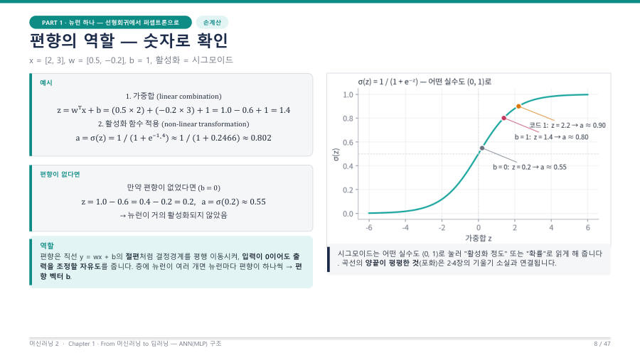

편향(bias) — 결정경계를 평행 이동시켜요 ★
교수님이 설명한 그림은 이래요. 직선에서 기울기가 변하면 가중치 w가 달라진 거예요.
기울기는 그대로인데 위아래로 올라가고 내려가면 b가 달라진 거예요. 그래서 "결정경계의 평행 이동"이라고 불러요.
시험 문제의 난이도는 그대로인데 합격 기준점만 올리거나 내리는 걸 떠올려 보세요. 점수를 계산하는 방식(w)은 안 바뀌고, 합격선이 움직이는 거예요. 활성화 함수의 임계값을 높이거나 낮추는 효과가 있다고 교수님이 말했어요.
강의자료의 숫자 예로 효과를 볼게요. 같은 입력과 가중치에서 b만 달라졌어요.
| 편향 | 가중합 z | 시그모이드 a | 해석 |
|---|---|---|---|
| b = 1 | 1.4 | 약 0.80 | 활성화됨 |
| b = 0 | 0.4 | 약 0.60 | 0.5 근처라 거의 활성화되지 않음 |
참고로 강의자료 슬라이드에는 b = 0일 때를 "z = 0.2, a ≈ 0.55"로 적어 놨어요.
직접 계산하면 0.5×2 + (−0.2)×3 = 0.4이고 σ(0.4) ≈ 0.60이에요. 어느 쪽이든 "0.5 근처에서 거의 활성화되지 않는다"는 결론이 같으니, 숫자보다 결론을 기억하세요. 시험은 시그모이드 수치 계산을 내지 않아요.

교수님이 목요일 분반에서 이해를 못 한 학생이 있어서 일부러 넣었다고 한 부분이 있어요. 바로 편향은 뉴런마다 하나씩이라는 거예요.
- 가중치 W는 표(행렬)지만 편향 b는 층 전체에 똑같이 적용되는 숫자 하나가 아니에요.
- 뉴런이 5개면 편향도 5개예요. 이것을 편향 벡터 b라고 불러요.
- 그래서 한 모델 안에 편향이 여러 개 들어 있어요.
편향이 없으면 어떤 제약이 생기는지가 시험 포인트예요. 편향이 없으면 가중합이 z = wᵀx뿐이라서 입력이 모두 0일 때 항상 z = 0이 돼요. 즉 모든 결정경계가 원점을 지나야 해서 표현력이 크게 제한돼요.
편향 = 절편 = 평행 이동 = 뉴런마다 하나. 편향이 없으면 "원점을 지나는 경계만 가능"이라고 한 문장으로 끝내요.
편향은 직선 방정식의 절편처럼 결정경계를 평행 이동시켜 입력이 0이어도 출력을 조정할 자유도를 준다. 편향이 없으면 모든 결정경계가 원점을 지나야 하므로 모델의 표현력이 크게 제한된다. 편향은 층 전체에 하나가 아니라 뉴런마다 하나씩 있어 편향 벡터를 이룬다.
잠깐 확인 — 은닉층에 뉴런이 256개라면 이 층의 편향은 몇 개인가요?
256개예요. 편향은 뉴런마다 하나씩이라서 뉴런 수와 같아요. 이 숫자가 2장의 파라미터 수 세기에서 "+ 이번 층 수"가 돼요.
화면을 가리고 "편향(bias) — 결정경계를 평행 이동시켜요 ★"을(를) 친구에게 설명하듯 한 문장으로 말해 보세요. 막히면 위의 빨간 칸만 다시 보고 넘어가요.
자료: 2주차 · 머신러닝2_chapter1_student_ver.pdf(PART 1) · 머신02.txt · 머신러닝07.txt